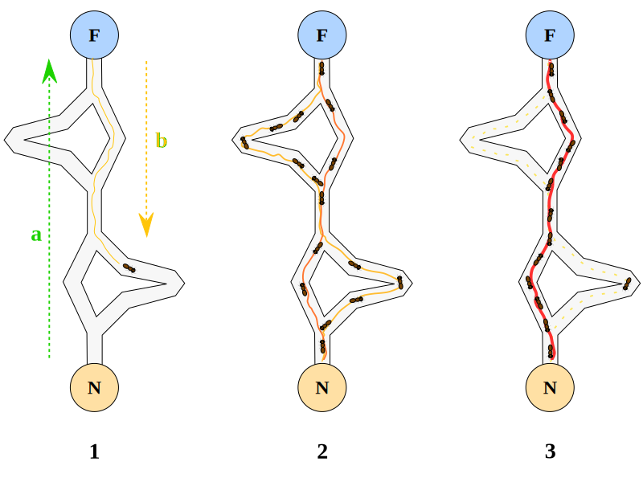
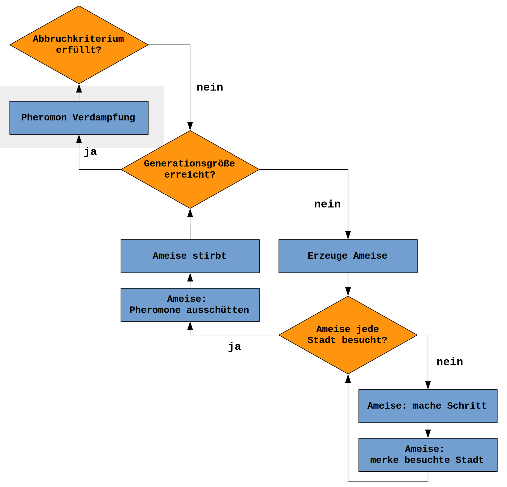

ACO
ANT System
Sebastian Koch und Daniel Nassauer
Inhalt
- ACO Allgemein
- AS
- Unterschied zu TSP
ACO
„Aco branches“. Lizenziert unter CC BY-SA 3.0 über Wikimedia Commons
{kind=link}
ACO
- Metaheuristik
- Optimierungsproblem
- Universell anwendbar
- Optimale Lösung unbekannt
- Schwarmintelligenz
- Einfache Individuen
- Intelligenter "Superorganismus"
ACO Anwendungen
- Färbung von Graphen
- Netzwerk, Routing: AntNet
- TSP
Varianten
| AS | ACS | MMAS | Rank Based AS |
|---|---|---|---|
| 1992 Dorigo |
1997 Dorigo, Gambardella |
2000 Stützle, Hoos |
1999 Bullnheimer, Hartl, Strauss |
| schlecht für große Karten | Schnelle Ergebnisse | Bessere Ergebnisse | Kompromiss: schnell und gut |
| nah am Vorbild | |||
ACO AS Algorithmus

Pfade finden
|
Gewichtung der Pfade
$$a_{ij} = \frac{(\tau_{ij})^{\alpha} (\eta_{ij})^{\beta}}{\sum\limits_{l \epsilon N_{i}} (\tau_{ij})^{\alpha} (\eta_{il})^{\beta}}$$
| $$a_{ij}$$ | Gewicht für Pfad von Stadt i nach j |
|---|---|
| $$\tau$$ | Pheromonkonzentration |
| $$\eta_{ij} = \frac{1}{d_{ij}}$$ | Attraktivität |
| $$N_{i}$$ | Alle Pfade von Stadt i |
Gewichtung der Pfade
$$a_{ij} = \frac{(\tau_{ij})^{\alpha} (\eta_{ij})^{\beta}}{\sum\limits_{l \epsilon N_{i}} (\tau_{ij})^{\alpha} (\eta_{il})^{\beta}}$$
| $$\alpha$$ | Autokatalytischer Mechanismus Anziehung von hoher Pheromonkonzentration |
|---|---|
| $$\beta$$ | implicit solution evaluation Anziehung von kurzer Strecke |
Wahrscheinlichkeit
$$p_{ij}^{k} = \frac{a_{ij}}{\sum\limits_{l \epsilon N_{i}^{k}} a_{il}}$$
| $$p_{ij}^{k}$$ | Wahrsch. für Ameise k Pfad ij zu wählen |
|---|---|
| $$N_{i}^{k}$$ | Von Ameise k nicht besuchte Städte |
Pheromon Ausschüttung
|
Pheromon Ausschüttung
$$\Delta\tau_{ij}^{k} = 1 / L^{k}$$
| $$\Delta\tau_{ij}^{k}$$ | Pheromonmenge für jeden Pfad |
|---|---|
| $$L^{k}$$ | Länge des Weges |
Pheromon Verdampfung
|  |
|
Vergleich zu TSP
| Kriterium | GA | ACO |
|---|---|---|
| Anzahl an Individuum | viele | wenige |
| Einfluss des Individuum | gering | hoch |
| Generelle Laufzeit | gering | hoch |
| Einfluss der Parameter | hoch | hoch |
Fragen?
Quellen
- Ant colonies for the traveling salesman problem, Marco Dorigo & Luca M. Gambardella 1996
- Ant Algorithms for Discrete Optimization, Marco Dorigo & Luca M. Gambardella 1996
- http://www.enzyklopaedie-der-wirtschaftsinformatik.de/wi-enzyklopaedie/lexikon/technologien-methoden/Operations-Research/Metaheuristik/Ameisenalgorithmus
- https://de.wikipedia.org/wiki/Ameisenalgorithmus